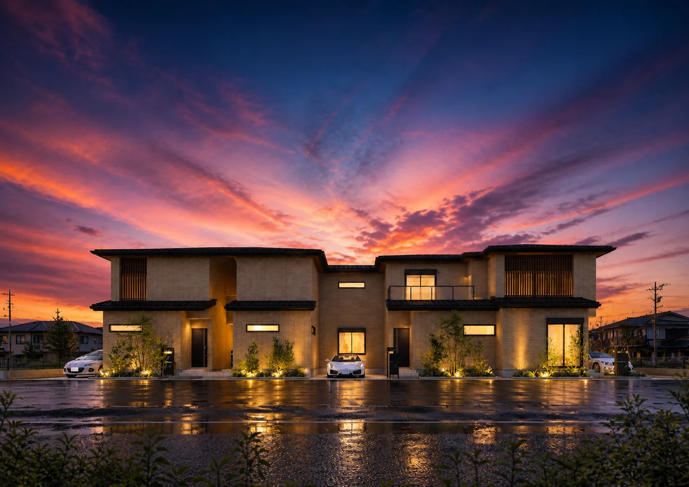
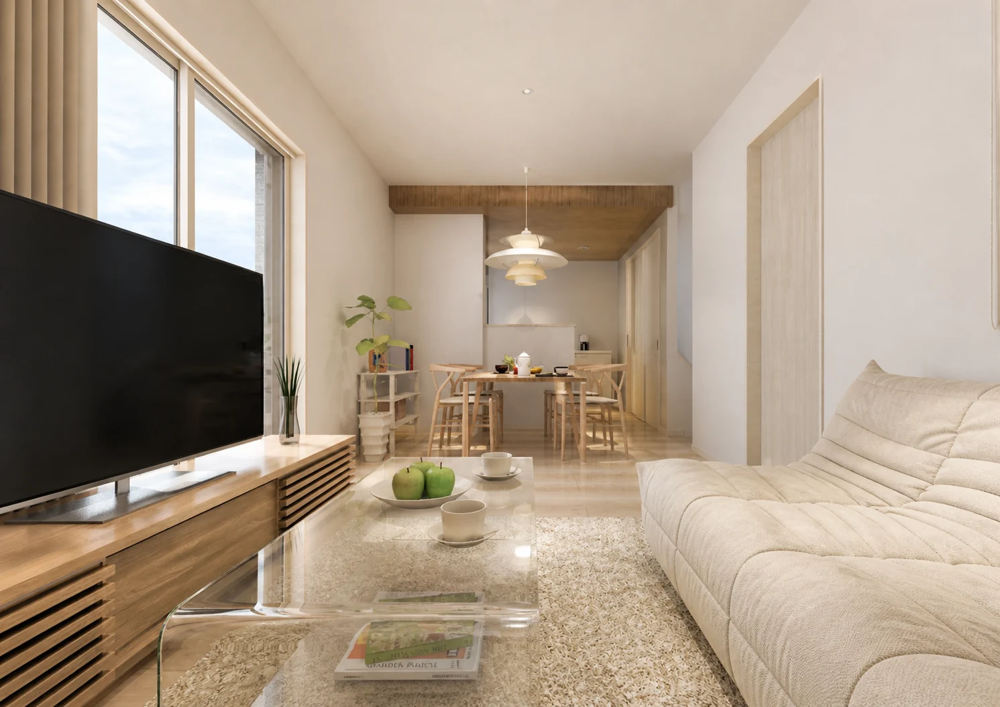
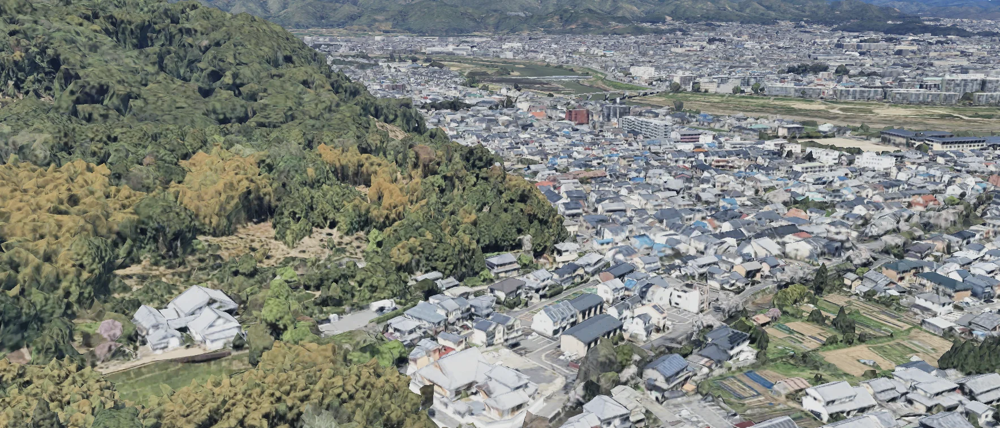
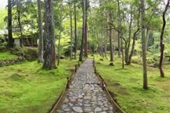
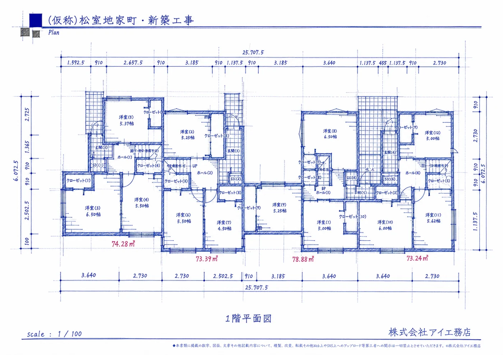
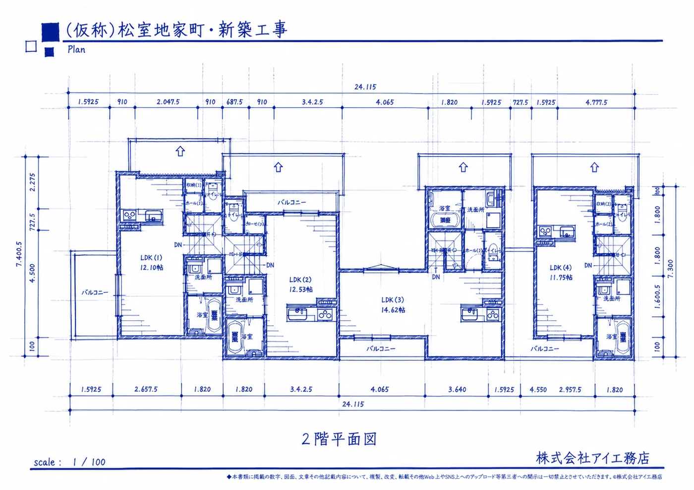
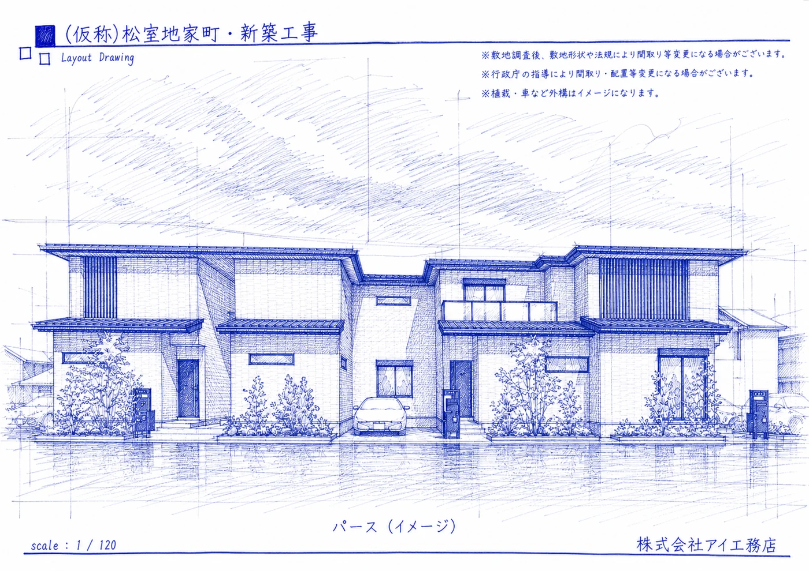
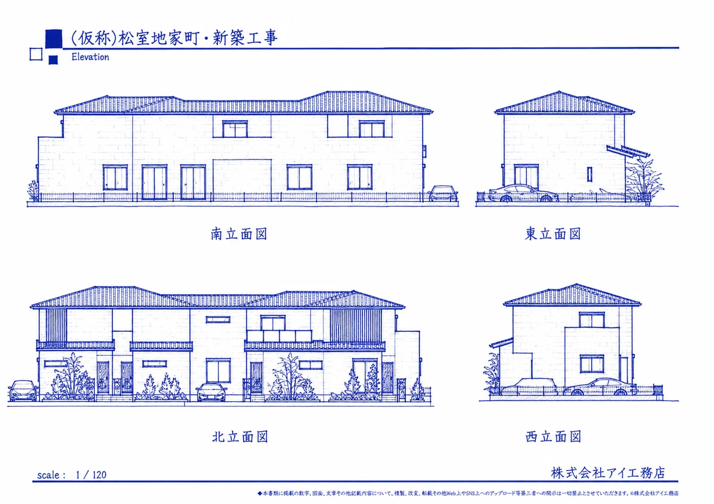
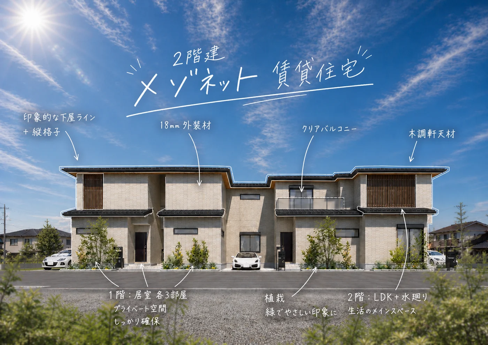

70㎡超のゆとり
全4世帯、各住戸70㎡以上。ファミリー層にも訴求しやすい住戸規模です。

KYOTO NISHIKYO / MATSUMURO
静かで豊かな暮らしをかたちにする。
鈴虫寺・苔寺にほど近い、緑と文化が寄り添う住環境。
家族の時間と、日々の静けさを大切にできるメゾネット賃貸住宅をご提案します。
CONCEPT
2階にLDKを確保し、明るさ・眺望と抜け感を演出。
プライベート空間と共有の空間とを緩やかに分け、在宅ワークにも適した快適な住環境を計画します。
入居者満足は、賃貸住宅経営の長期安定に寄与します。
全4世帯、各住戸70㎡以上。ファミリー層にも訴求しやすい住戸規模です。
明るさと抜け感を取り込み、日常の中心を心地よく整えます。
上下階で生活領域を分け、戸建て感覚の暮らしを叶えます。
敷地内駐車場を確保し、郊外型賃貸の実用性を高めます。

LIFE STYLE
LDKを2階に設けることで、外部からの視線をやわらかく避けながら、明るさと開放感を確保します。
在宅ワーク、二人暮らしの新生活、子育て世帯まで。多様な暮らし方に寄り添う住まいです。
LOCAL VALUE
名庭と山並みの気配が近くにあること。日々の散歩や暮らしに、落ち着いた豊かさをもたらします。




PLAN & ARCHITECTURE
メゾネット形式により、居室とLDK、水回りを立体的に整理。全戸SICを備え、収納計画にも配慮します。




KEY POINTS
落ち着きある住棟計画
明るさと抜け感を確保
敷地内にゆとりを確保
全戸SICを計画
街並みにやさしく馴染む外構
PROJECT DATA

PRIVATE WEB BOOK
プラン・外観・暮らし方の考え方を、専用ページでゆっくりご覧いただけます。